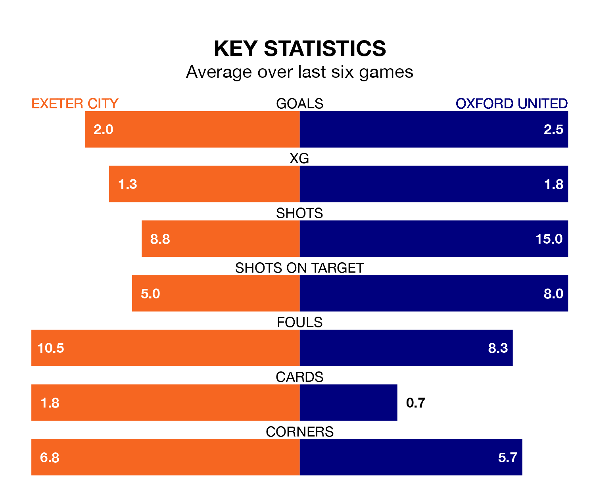

Oxford United are strong favourites to take all three points despite Exeter City's home advantage in Saturday lunchtime's match at St James Park.
*Betting Company* are offering odds of 1.85 on Oxford sealing the win, with the visitors sitting seventh in EFL League One table.
Exeter, who are 13th in the league and 13 points behind the Us, are priced at 3.4 to win. A draw is set at 3.45.
With 77 goals in 45 games so far this season, Oxford are scoring more than average in the league with 1.7 goals per game. And they are conceding fewer than average, letting in 55 goals at a rate of 1.2 per game.
Exeter, meanwhile, are below average scorers, with 1.0 goal per game, compared to a league average of 1.3. They have conceded 1.3 goals per game.
In the last 10 years, Exeter and Oxford have played each other on eight occasions. Exeter won one of them, Oxford six, and they drew once.
On average, Exeter scored 0.9 goals and the Us 2.8 in those matches.
Their last meeting was on September 23, when Oxford won 3-0 at home.
City are in good form in EFL League One, with four wins and two draws from their last six games.
With three wins and two draws over that period, United's form is worse – they have taken 11 points from 18, compared to the home team's 14.
In Mark Thomas Harris, the Us have one of the league's most on-form strikers so far this season. He has notched 14 goals in 42 appearances, to sit eighth in the scoring charts.
His goal rate of one every 239 minutes is quicker than that of Reece Cole, Exeter's top scorer with a goal every 434 minutes, and a total of six goals in 38 games.
Exeter's last match was on Saturday, a 2-1 win against Northampton Town, with Luke Harris and Will Aimson getting the goals for Exeter.
Oxford drew 1-1 with Stevenage last time out, on April 19, with Cameron Brannagan on the scoresheet.
Updated: 07:59 (UTC), 26/04/24